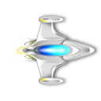
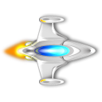
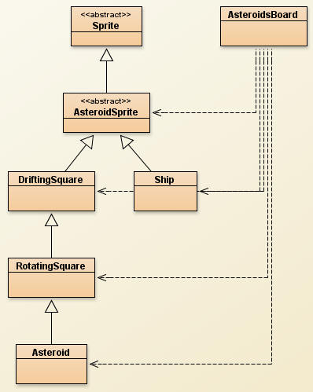
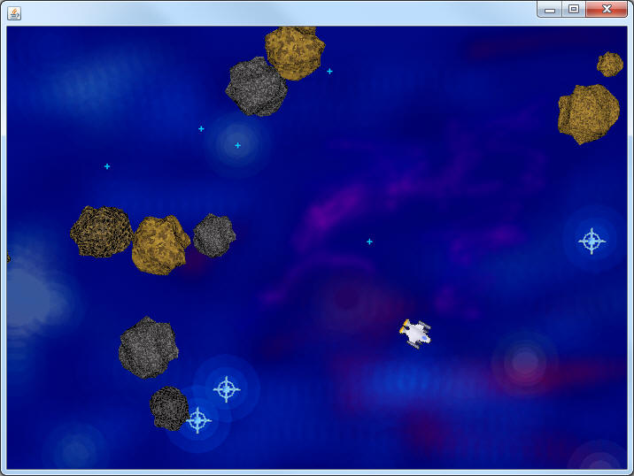

The Ship


Now that the Asteroids are in the background, it's time to represent the user with a spaceship. Create a class named Ship that extends AsteroidSprite. By extending AsteroidSprite, the Ship already has x, y, width, height, xVelocity, yVelocity, and rotation. The Ship class only needs to override the paintSprite method and add a few more things to help control it.

Instance fields:
The two instance fields that the Ship needs are a Picture object to hold the image, and a double to represent the maximum speed of the ship (start it around 12 and adjust to your liking from there).
Constructor:
Have the Ship's constructor take in an x and a y, and then set the width/height to 40 and initialize the Picture field. You may want to set the rotation to 90, since that will point the Ship straight up.
You have a choice of the following images in sacco.jar. You may load them using the Picture.loadFromJar method
"space/spaceship.png"
"space/blueship.png"
"space/shipnoboost.png"
"space/shipwithboost.png"
The paintSprite method:
This should look almost exactly like Asteroid's paintSprite method.
Control Methods:
The initial Ship doesn' thave a speed, but as the program progresses you'll want to change a few of the variables:
Add two void methods turnLeft and turnRight. When they're called they should change the rotation by a small amount (15 is a good starting value). Adding to the rotation will turn left, while subtracting will turn right.
public void boost()
The boost method will be in charge of modifying the xVelocity and yVelocity. The amount that you want to add to the xVeloctiy and yVelocity are directly related to the rotation of the ship. Since having to learn a practical use for trigonometry conflicts with many personal belief systems, use the following two local variables:
double diffXV = Math.cos(Math.toRadians(getRotation())); double diffYV = -Math.sin(Math.toRadians(getRotation()));
Each of these variables is how much should be added to the xVelocity and yVelocity each time the boost method is called. If the acceleration turns out to be too slow in the end, you may multiply these variables by some double to make them larger or smaller.
Adding to the AsteroidBoard:
We don't want the Ship to be just another Sprite in the Asteroid list, so we're going to make a few changes:
- In the Instance Fields, add a single Ship variable.
- In the Constructor, construct a new Ship at 350,250 and assign it to the
instance field.
- In the paintWindow method, call the Ship's paintSelf method
(NOT THE PAINTSPRITE METHOD!!!).
- In the onTimerTick method, call the Ship's update method.
At this point, compile to make sure the compiler is happy. If you run the program, the ship will not move anywhere yet. The methods are there, the DrawingBoard just has to call them at the appropriate time.
Controlling the Ship:
If you haven't already, make sure that you've set up three booleans that reflect the state of the up, left, and right arrow keys. Once you know that they are set up properly you simply have to add three if statements to the onTimerTick method of the AsteroidBoard.
If the left key is being pressed, call the ship's
turnLeft method.
If the right key is being pressed, call the ship's turnRight method.
If the up key is being pressed, call the ship's boost method.
Now run the ship and test out the controls. You should be able to get a pretty good ship flying around, but you might notice that there is no maximum speed for the Ship. This causes problems at really high speeds.
Go back to the Ship class. First, add an instance field that's a double to represent the max speed and set it to around 15 in the constructor (you may go back and change it later if it's too fast/slow for you). Make the last line of the boost method call this.limitVectors(), then add the limitVectors method below. For those who have taken some vector math, it finds the length of the speed vector and then uses normalization to maintain the vector proportions while maintaining a specific speed.
public void limitVectors()
{
//get the velocities
double xV =getXVelocity();
double yV =getYVelocity() ;
//Calculate the speed using the distance formula
double speed = Math.sqrt(xV*xV+yV*yV);
//If the velocities made the speed too large
if( speed > maxSpeed)
{
//normalize the vectors to be at the maxSpeed
setXVelocity(maxSpeed*xV/speed);
setYVelocity(maxSpeed*yV/speed);
}
}
